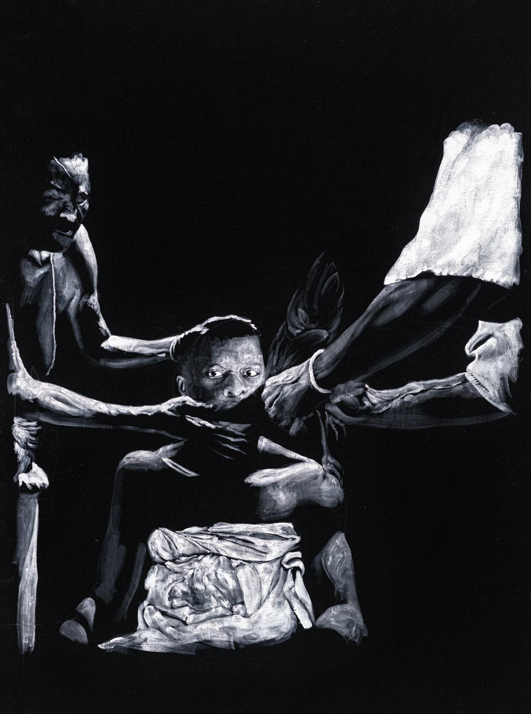

La galerie

La Galerie Cécile Fakhoury a ouvert ses portes à Abidjan en septembre 2012. En 2018, elle inaugure un espace à Dakar et un showroom à Paris. Depuis mars 2020, le Project Space d'Abidjan accueille une programmation prospective.
La galerie offre une visibilité à la créativité et à la diversité artistique contemporaine en Afrique, par ses expositions monographiques et collectives, sa participation aux foires et biennales internationales et ses collaborations avec des galeries étrangères.
Les artistes représentés se distinguent par un langage plastique qui s'affranchit des frontières et refuse la stigmatisation géographique. Ils portent un regard éclairé et critique sur notre société et contribuent à l'écriture d'une mémoire vive de leurs pays.
Nous rendre visite
06 BP 6499 Abidjan 06
Cocody, boulevard Latrille, entre la Sodemi et l'immeuble Carbone
+225 27 22 44 66 77
abidjan@cecilefakhoury.com
+221 33 842 90 91
dakar@cecilefakhoury.com
Showroom, 7e arrondissement, sur rendez-vous
+33 (0)7 62 06 36 20
paris@cecilefakhoury.com